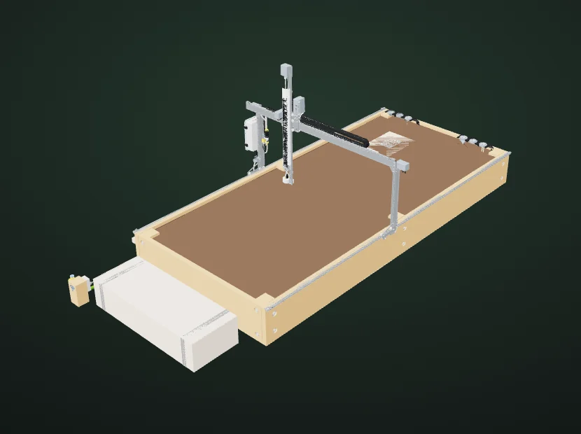

For small U.S. equipment manufacturers
Make your equipment
the parts catalog.
Help customers identify what they need before they call. EXO builds the visual catalog around your existing store, dealer or parts department.
One model. Your ordering process. Your review before release.

No FarmBot affiliation or endorsement.
See the customer’s task
From “this part”
to a useful next step.
Open an assembly, find a documented service item, and inspect its replacement references. If fit still needs confirmation, the experience should say so.
- 01
Find the area
Use the recognizable machine, or search by name or number.
- 02
Identify the item
See its documented identity, assembly context and selling-unit notes.
- 03
Continue with confidence
Check the manufacturer’s reference, or prepare a request that explains what still needs confirmation.
The interactive model loads only when you open it. This page uses a lightweight still image.
We build your first machine catalog with you
Start with one machine.
Make the scope clear.
One agreed model revision, a defined set of service assemblies and an existing ordering route. We agree the useful coverage before preparing the pilot.
Permitted designs, service records and the revision to represent.
We connect the agreed model to your approved replacement parts and flag information that still needs confirmation.
A store, dealer, quote process or parts department.
Customers continue through your store, dealer or parts desk.
Someone who can confirm service identity, fit and permitted disclosure.
Feedback resolved against the package intended for customer release.
Part substitutions, revisions or changes to destinations.
Planned corrections and updates, with extra work quoted before it begins.
Separate scope: major reconstruction, additional equipment configurations, broad serial-rule cleanup and custom commerce integrations. Checkout, inventory, shipping and warranty stay with your existing systems.
Understand what you are buying
Preparation once.
Updates agreed in advance.
We quote your first machine after reviewing its source material and service coverage. Setup and ongoing charges are shown separately before you commit.
One-time setup fee
A defined release.
We prepare one agreed model revision, connect its service items to your parts information, resolve your review and prepare the release.
Ongoing fee, if agreed
A defined allowance.
Hosting, parts-link checks and an agreed allowance for corrections and updates. Your proposal states exactly what is included.
Your proposal will specify coverage, fees, review rounds, schedule, maintenance limits, response hours, additional-work rates, term and exit/export rights. These are agreed contract terms, not unlimited or round-the-clock service.
You approve what customers see
Service information.
On your terms.
The pilot scope starts with the service representation and fields you permit customers to see. Browser-visible geometry can be downloaded; only approved material belongs in a customer release.
Read the delivery & data notesStart a practical conversation
Bring one machine.
Start with the parts problem.
Work directly with Blake Grove, the person building the experience. Begin with the model, your current parts process and the material you already have.
Blake Grove · EXO
AionForgestudios@gmail.com
Support: Monday–Friday, 9 a.m.–5 p.m. Eastern Time.
Email Blake directly, or use the optional brief to organize your thoughts. Email links open a draft in your mail app for you to review and send. Nothing is submitted automatically.
What to agree before a pilotNo personal details or confidential files needed. Entries stay on this page until you copy, download or open an email draft. They are not submitted to EXO automatically.
No request has been sent.